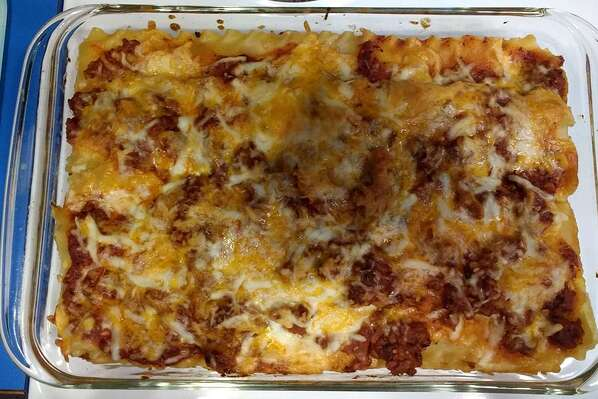

Lasagna

Brenda's Lasagna
This is a faster, and less expensive lasagna
This lasagna recipe is very easy to make and also pretty fast. You will spend 30 minutes preparing it and 30 minutes cooking it!
Ingredient List
1 package lasagna noodles
1/2 pound shredded Cheddar cheese
1/2 pound shredded mozzarella cheese
Steps:
- Bring a large pot of lightly salted water to a boil. Add pasta and cook for 8 to 10 minutes or until al dente; drain.
- Preheat oven to 350 degrees F (175 degrees C). In a large skillet over medium-high heat, brown beef and season with salt and pepper; drain. Stir in spaghetti sauce and garlic and simmer 5 minutes.
- In a medium bowl, combine mozzarella, Cheddar and ricotta; stir well. In 9x13 inch pan, alternate layers of noodles, meat mixture and cheese mixture until pan is filled.
- Bake in preheated oven for 30 minutes, or until cheese is melted and bubbly.
- Enjoy!